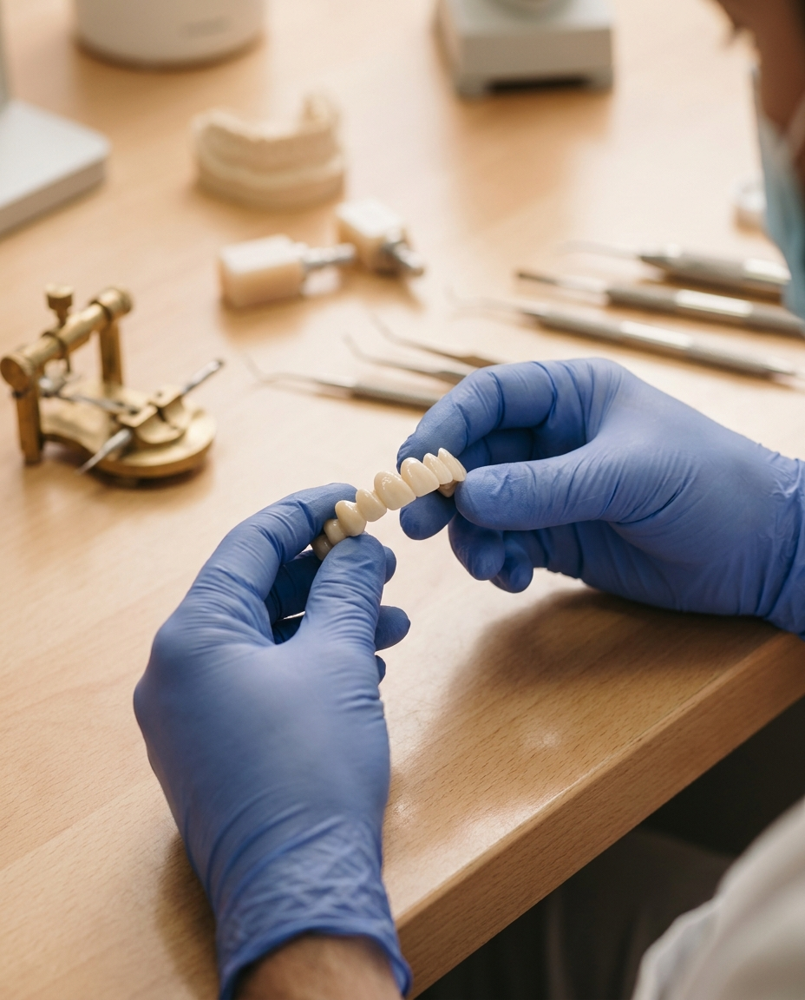
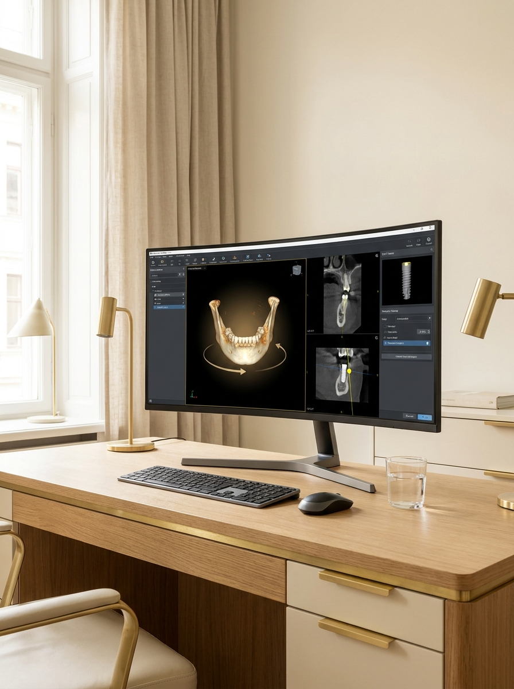
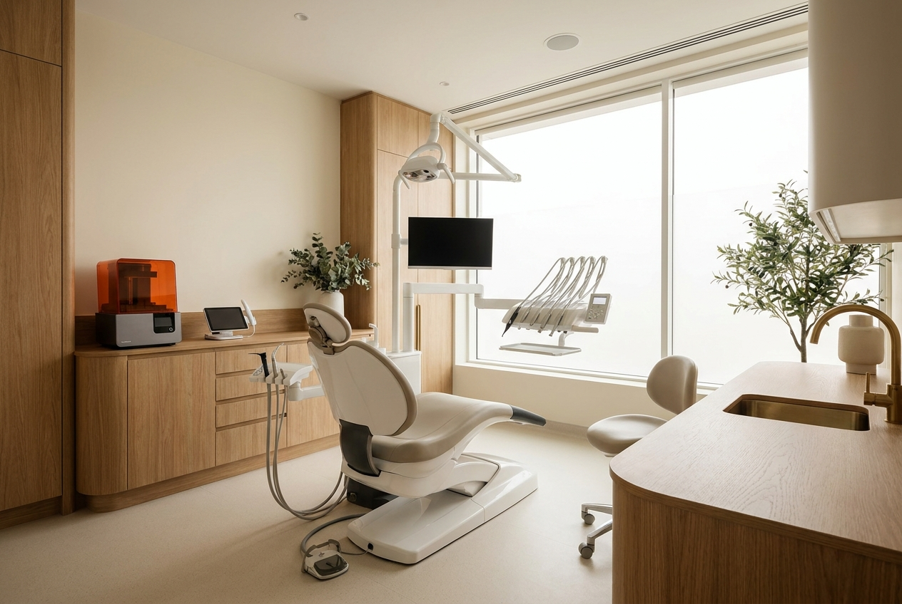

Protocolo e arco completo
Reabilitação de toda a arcada sobre implantes para quem perdeu muitos dentes ou usa dentadura, devolvendo função e estética com dentes fixos.
Implantes, protocolo e carga imediata com planejamento digital e cirurgia guiada. Tecnologia para devolver seu sorriso com previsibilidade e, em casos indicados, dentes no mesmo dia.
Professor convidado na Universidade de Barcelona, pós em Miami e Ambassador SIN Implant System.

Perder dentes, conviver com a prótese que se solta ou carregar a frustração de um tratamento que não deu certo cansa. Muita gente chega aqui com medo da dor, da cirurgia e de investir sem ter certeza. Aqui o caminho é outro: avaliação criteriosa, planejamento digital e conversa honesta sobre o que é possível no seu caso.
Se te disseram que não tinha solução, comece por uma avaliação de verdade.
Impossível a gente não tem essa palavra aqui.

Exames de imagem 3D permitem planejar cada implante virtualmente antes do procedimento. A cirurgia guiada torna a etapa mais precisa, previsível e menos invasiva.
Em casos com indicação clínica adequada, é possível instalar os dentes provisórios no mesmo dia do implante, evitando longos períodos sem sorrir. A indicação é sempre avaliada individualmente.
Impressão 3D e materiais cerâmicos de alta estética para reproduzir dentes com aparência natural, respeitando o formato e a cor do seu sorriso.
Todo plano começa por uma avaliação individual. O tratamento indicado depende do seu caso.

Reabilitação de toda a arcada sobre implantes para quem perdeu muitos dentes ou usa dentadura, devolvendo função e estética com dentes fixos.
Reposição de um dente perdido com raiz artificial e coroa natural, sem desgastar os vizinhos.
Dentes fixos provisórios no mesmo dia do implante, em casos com indicação clínica.
Lentes de contato dental e harmonização do sorriso para refinar forma, cor e proporção.
Conversamos sobre a sua história, examinamos e fazemos o planejamento digital em 3D para entender o que é possível no seu caso.
O implante é realizado com técnica guiada, mais precisa e confortável, seguindo exatamente o que foi planejado.
Acompanhamento próximo em cada etapa da reabilitação até você voltar a sorrir, mastigar e falar com segurança.
Cirurgião-dentista com formação na Escola Bahiana de Medicina e Saúde Pública e especialização dedicada à implantodontia. Aperfeiçoou-se em cirurgia de implante avançada em Miami e foi professor convidado na Universidade de Barcelona em 2025.
Como Ambassador SIN Implant System, também dedica parte da rotina a formar centenas de dentistas pelo Brasil, unindo prática clínica de excelência ao ensino.
Transformar sorrisos é mais que técnica, é devolver confiança e qualidade de vida.
CRO-BA 16772 · Responsável Técnico: Dr. Giovanni I. B. Nascimento

Em respeito ao Código de Ética Odontológica (CFO / Res. CFO-118/2012), priorizamos mostrar estrutura, tecnologia e conteúdo educativo. Não divulgamos imagens de antes e depois nem garantias de resultado. Cada caso é único e avaliado individualmente em consulta.
Relatos de pacientes, compartilhados com autorização.
Cheguei com medo e achando que meu caso não tinha solução. Fui recebida com calma, tudo explicado passo a passo. Hoje mastigo e sorrio sem pensar.
Maria de Fátima Salvador, BA
O que mais me marcou foi a segurança do planejamento. Vi tudo antes de começar.
José RicardoSalvador, BA
Usei prótese por anos e vivia com vergonha. Voltei a comer o que gosto e a falar tranquila.
Ana CláudiaLauro de Freitas, BA
Muitos casos considerados difíceis têm alternativas de tratamento hoje graças ao planejamento digital e às técnicas modernas de implante. Só uma avaliação individual permite dizer o que é possível no seu caso, e é exatamente para isso que serve a consulta.
Depende do seu caso. Quando há indicação clínica, a carga imediata permite sair com dentes provisórios fixos no mesmo dia do implante. Em outras situações, existem soluções provisórias para que você não fique sem sorrir. Isso é definido no planejamento.
O tratamento é feito com anestesia e, sempre que indicado, com cirurgia guiada, que tende a ser mais precisa e confortável. O acolhimento e o controle do pós-operatório fazem parte do cuidado em cada etapa.
O objetivo é reproduzir a forma, a cor e as proporções de um sorriso natural, respeitando as características de cada pessoa. Os materiais cerâmicos e o planejamento estético ajudam a buscar esse resultado harmônico.
Cada plano de tratamento é individual, então os valores e as condições são apresentados após a avaliação, de acordo com o que o seu caso realmente precisa. Na consulta explicamos tudo com transparência.
Av. Tancredo Neves, 2539, Ed. CEO, Salvador Shopping, Torre Nova Iorque, sala 1811/1812. Caminho das Árvores, Salvador, BA
Atendimento com hora marcada. Consulte a disponibilidade pelo WhatsApp.
Preencha e retornamos pelo WhatsApp para marcar o melhor horário.
Seu recomeço
Dê o primeiro passo para voltar a sorrir com segurança. Agende sua avaliação com o Dr. Giovanni Nascimento.